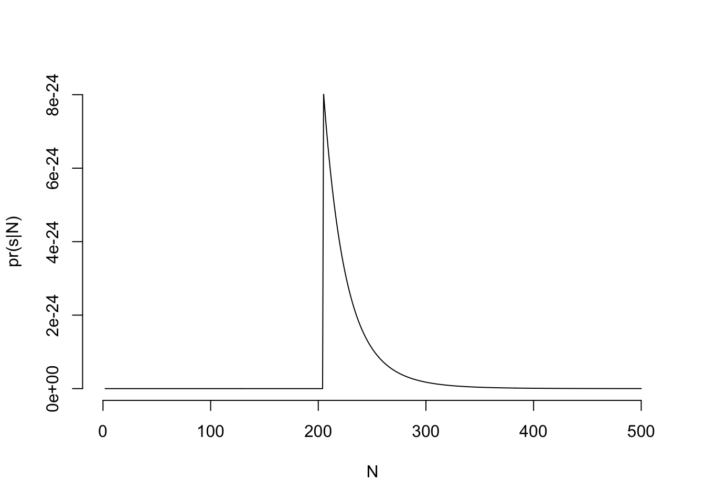
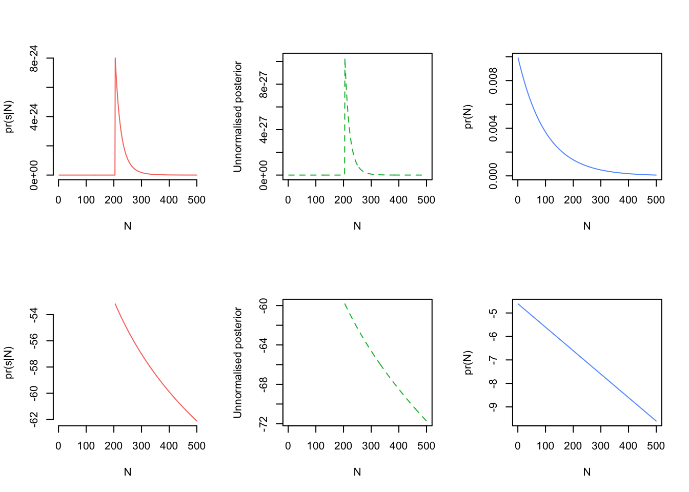
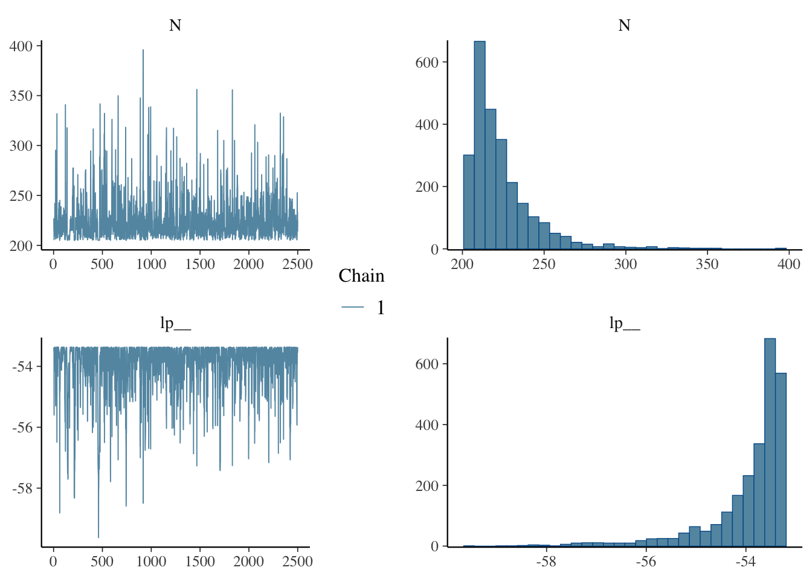
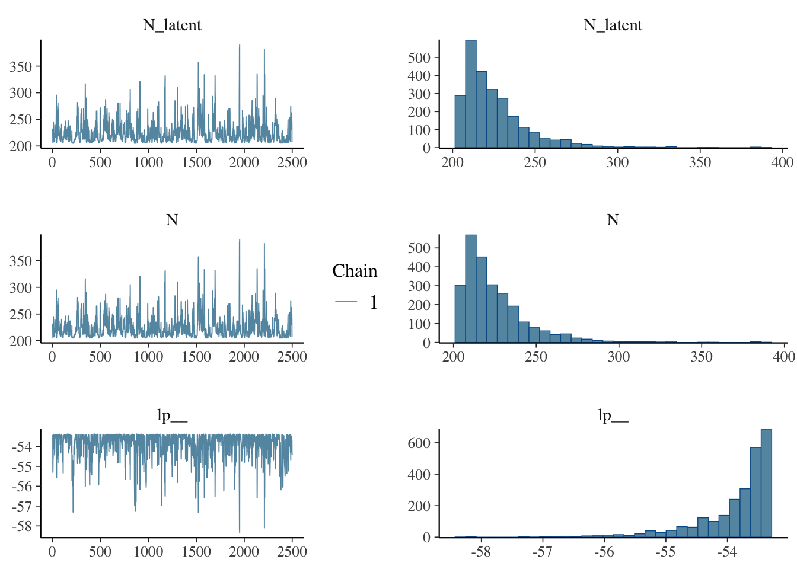

See the bottom of this page for some scaffolding code to get you started. Fill in the appropriate places with the code for making the algorithm work. Alternatively, there is an implementation provided on the github repository.
Recall the German tank problem presented in lecture. Use the following captured serial numbers:
s = c(147, 126, 183, 88, 9, 203, 16, 10, 112, 205)Your goal is to estimate a single parameter, \(N\), the highest possible serial number (indicating the number of tanks actually produced).
We should use a uniform likelihood, with a minimum of 1 and \(N\) as the maximum.
\[ pr(s|N) = \frac{1}{N - 1} \quad\text{for all } 1 \le s \le N \]
# we do the log liklihood, better for computational reasons
#' Log liklihood function for german tank problem
#' @param N Parameter, maximum serial number possible
#' @param x Data, vector of observed serial numbers
#' @return Log liklihood of x|N
ll = function(N, x) sum(dunif(x, 1, N, log = TRUE))
# now plot it, back-transforming to see the liklihood instead of ll
N_plot = seq(1, 500, 1)
lN = exp(sapply(N_plot, ll, x = s)) # sapply because ll wants to work on ONE value of N at a time## Warning in dunif(x, 1, N, log = TRUE): NaNs producedplot(N_plot, lN, type = 'l', bty = 'n', xlab = "N", ylab= "pr(s|N)")
a and b above into a Stan
statement for the model block. It will look something like
s ~ ...model {
s ~ uniform(1, N);
}a.We cannot consider \(s\) when building our prior. All that’s left is to think what is reasonable. Some knowns:
From these two, some trial and error led me to a prior that apportions probability mass in a way that follows my beliefs.
model {
s ~ uniform(1, N);
N ~ exponential(0.01);
}What does this prior tell us about different values of N?
lp = function(N, lam) dexp(N, lam, log = TRUE)
# first try prior with rate of 0.01, as in the stan code
lp(N = 100, lam = 0.01) - lp(N = 1e6, lam = 0.01)## [1] 9999Production of 100 tanks is about 10.000 times more likely than the production of a million tanks
# Make the prior 10x less informative by adding a zero to the rate
lp(N = 100, lam = 0.001) - lp(N = 1e6, lam = 0.001)## [1] 999.9#' Log posterior function for german tank problem
#' @param N Parameter, maximum serial number possible
#' @param x Data, vector of observed serial numbers
#' @param lam Prior rate parameter for N
#' @return Log unnormalised posterior, proportional to the probability of N|x
lpost = function(N, x, lam) ll(N, x) + lp(N, lam)
cols = scales::hue_pal()(3)
post_N = exp(sapply(N_plot, lpost, x = s, lam = 0.01))## Warning in dunif(x, 1, N, log = TRUE): NaNs producedprior_N = exp(lp(N_plot, lam = 0.01))
par(mfrow=c(2,3))
plot(N_plot, lN, type = 'l', bty = 'n', col = cols[1], xlab = "N", ylab = "pr(s|N)")
plot(N_plot, post_N, col = cols[2], lty=2, xlab = "N", type = 'l', ylab = "Unnormalised posterior")
plot(N_plot, prior_N, col = cols[3], xlab = "N", ylab = "pr(N)", type = 'l')
# The probs are not as useful sometimes as viewing them on the log scale
plot(N_plot, log(lN), type = 'l', bty = 'n', col = cols[1], xlab = "N", ylab = "pr(s|N)")
plot(N_plot, log(post_N), col = cols[2], lty=2, xlab = "N", type = 'l', ylab = "Unnormalised posterior")
plot(N_plot, log(prior_N), col = cols[3], xlab = "N", ylab = "pr(N)", type = 'l')
optimizing function. What’s the MAP estimate?
vector datatype, which
we haven’t seen yet. Look it up in the Stan manual to see if you can
understand how and where to use it.data {
int nobs; // number of observations
vector <lower = 1> [nobs] s;
real <lower = 0> lam; // prior hyperparameter for N
}
parameters {
real <lower = max(s)> N; // important! N must be greater than the largest value in s
}
model {
s ~ uniform(1, N);
N ~ exponential(lam);
}tank_mod = rstan::stan_model("my_stan/tank_model.stan")The above assumes you have created the stan program and saved it in a
file named "my_stan/tank_model.stan". Adjust as
appropriate.
tank_data = list(
nobs = length(s),
s = s,
lam = 0.01
)
(tank_map = rstan::optimizing(tank_mod, data = tank_data)$par)## N
## 205Use sampling() to get 5000 samples from the posterior
distribution. Alternatively, if you finished part 1 above, try this with
your own sampler.
library(rstan)
tank_fit = sampling(tank_mod, data = tank_data, iter = 5000, chains = 1, refresh = 0)
tank_fit## Inference for Stan model: anon_model.
## 1 chains, each with iter=5000; warmup=2500; thin=1;
## post-warmup draws per chain=2500, total post-warmup draws=2500.
##
## mean se_mean sd 2.5% 25% 50% 75% 97.5% n_eff Rhat
## N 223.95 0.70 20.71 205.36 210.24 217.81 230.02 278.81 886 1.00
## lp__ -53.95 0.04 0.84 -56.61 -54.11 -53.62 -53.42 -53.37 467 1.01
##
## Samples were drawn using NUTS(diag_e) at Fri Nov 24 10:53:37 2023.
## For each parameter, n_eff is a crude measure of effective sample size,
## and Rhat is the potential scale reduction factor on split chains (at
## convergence, Rhat=1).mcmc_trace() and
mcmc_hist() from the bayesplot package (or
implement your own versions). You might need to use
as.array or as.matrix to convert the samples
from stan to something that bayesplot can use. Compare the histogram of
samples to the posterior density plot you made in 2d.library(bayesplot)
tank_samps = as.matrix(tank_fit)
# mcmc_combo puts multiple plots on the same figure
# What is lp__??
mcmc_combo(tank_samps, combo = c("trace", "hist"))
I suggest median for this dataset, since the distribution is highly skewed.
c(mean = mean(tank_samps[,'N']), median = median(tank_samps[,'N']), mode = tank_map)## mean median mode.N
## 223.9510 217.8061 205.0000Credible intervals are tricky. We can of course construct a quantile interval:
(quant_interval = quantile(tank_samps[,'N'], c(0.05, 0.95)))## 5% 95%
## 205.8410 262.2624But this has the strange property that the mode is not included. Depending on how skewed the posterior is, it is even possible that the median is not included!
A better approach is to include the tallest 90%, which is also the narrowest interval. Such an interval is called the highest density interval (HDI). A simple approach to this is to compute many potential intervals, and choose the narrowest.
# Operate on sorted samples
# this makes it easy to take a 90% intervals from any start point: it's just the next 90% of observations
samps_sorted = sort(tank_samps[,'N'])
# how many values in a 90% interval?
int_width = ceiling(0.9 * length(samps_sorted))
interval = c(samps_sorted[1], samps_sorted[1 + int_width - 1])
# our maximum possible start is the 10th quantile
possible_intervals = seq(2, floor(0.1 * length(samps_sorted)), 1)
for(i in possible_intervals) {
width = interval[2] - interval[1]
new_interval = c(samps_sorted[i], samps_sorted[i + int_width - 1])
new_width = new_interval[2] - new_interval[1]
if(new_width < width)
interval = new_interval
}
# compare with the quantile interval
rbind(quantile = quant_interval, hdi = interval)## 5% 95%
## quantile 205.8410 262.2624
## hdi 205.0124 248.4253The HDI is quite a bit narrower than the quantile interval. There is
a more complete function for doing this in the git repository in:
vu_advstats_students/r/mh.r
You probably have produced a model in 2 that treats N as a continuous varible, resulting of course in estimates that say something like “1457.3 tanks were produced.” This is of course impossible, \(N\) and \(s\) are both discrete parameters. Can you design a model that respects this constraint? How do the results differ?
Discrete parameters are tricky in Stan, and sampling in discrete space doesn’t always work. We can manage it with this relatively simple problem, in part becaues the log liklihood is quite a simple exression.
data {
int nobs; // number of observations
vector <lower = 1> [nobs] s;
real <lower = 0> lam; // prior hyperparameter for N
}
parameters {
real <lower = max(s)> N_latent;
}
model {
for(i in 1:nobs) {
if(floor(N_latent) < s[i]) {
// if any N is less than s, add -Inf to the likelihood
target += log(0);
} else {
// discrete uniform distribution with a min of 1 and max of N_latent
target += -log(floor(N_latent));
}
}
N_latent ~ exponential(lam);
}
generated quantities {
// output N, which is the "real" max serial number
// this is the value we use to compute the likelihood, and is
// just N_latent, rounded down
real N = floor(N_latent);
}tank_fit_d = sampling(tank_mod_discrete, data = tank_data, iter = 5000, chains = 1, refresh = 0)
tank_samps_d = as.matrix(tank_fit_d)
mcmc_combo(tank_samps_d, combo = c("trace", "hist"))## `stat_bin()` using `bins = 30`. Pick better value with `binwidth`.
(quant_interval = quantile(tank_samps_d[,'N'], c(0.05, 0.95)))## 5% 95%
## 206 265samps_sorted = sort(tank_samps_d[,'N'])
# how many values in a 90% interval?
int_width = ceiling(0.9 * length(samps_sorted))
interval = c(samps_sorted[1], samps_sorted[1 + int_width - 1])
# our maximum possible start is the 10th quantile
possible_intervals = seq(2, floor(0.1 * length(samps_sorted)), 1)
for(i in possible_intervals) {
width = interval[2] - interval[1]
new_interval = c(samps_sorted[i], samps_sorted[i + int_width - 1])
new_width = new_interval[2] - new_interval[1]
if(new_width < width)
interval = new_interval
}
# compare with the quantile interval
rbind(quantile = quant_interval, hdi = interval)## 5% 95%
## quantile 206 265
## hdi 205 250The results very similar, but now the mode is correctly and exactly included!